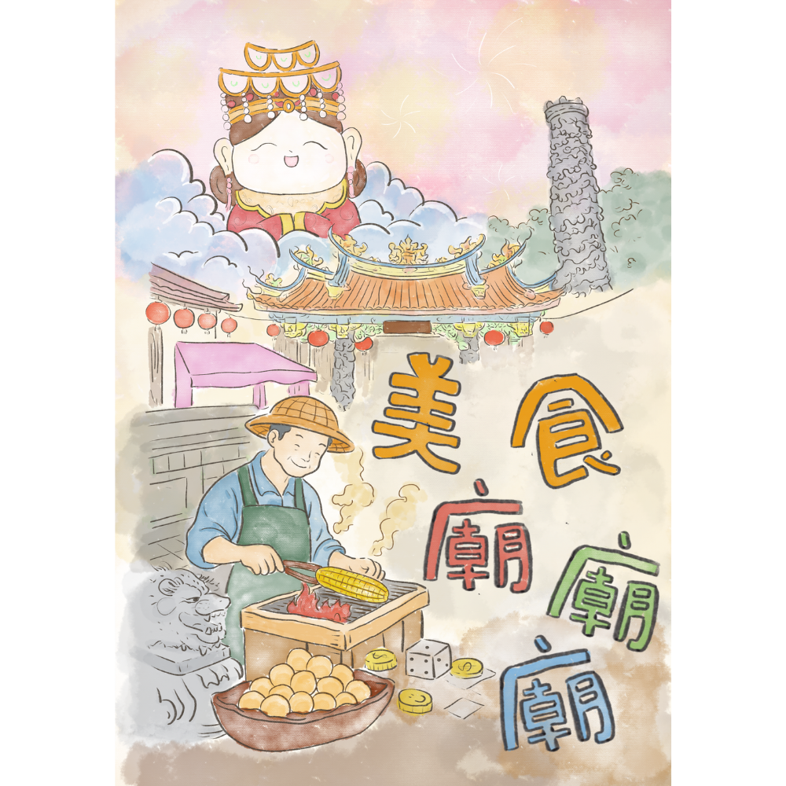
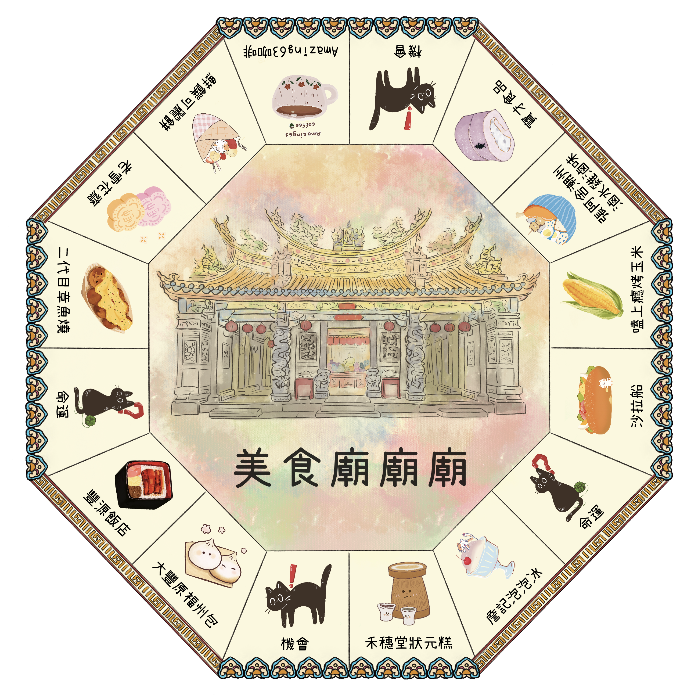

我們的桌遊介紹
《美食廟廟廟》是一款以臺中豐原慈濟宮為背景設計的在地文化桌遊，結合廟宇信仰、廟口美食與地方生活，將真實文化轉化為有趣的遊戲體驗。玩家在遊戲中，透過卡牌互動、事件觸發與資源累積，彷彿走進熱鬧的廟東商圈，感受祭典氛圍與人情味。
遊戲不只是競爭與策略，更是一段文化探索的過程。從媽祖信仰到在地小吃，每一個元素都融入設計之中，讓玩家在輕鬆遊玩的同時，也能慢慢認識豐原的文化特色與生活樣貌。希望透過這款桌遊，讓更多人用不一樣的方式，看見並理解在地文化的魅力。
遊戲不只是競爭與策略，更是一段文化探索的過程。從媽祖信仰到在地小吃，每一個元素都融入設計之中，讓玩家在輕鬆遊玩的同時，也能慢慢認識豐原的文化特色與生活樣貌。希望透過這款桌遊，讓更多人用不一樣的方式，看見並理解在地文化的魅力。

主視覺海報桌遊特色
以互動體驗為核心，透過任務推進與資源收集的方式進行遊戲，玩家在過程中需要探索不同的廟口攤位並完成對應目標。遊戲結合策略選擇與玩家之間的互動機制，使每一次遊玩都能產生不同的體驗。
藉由情境式設計，讓玩家在遊戲流程中逐步理解廟宇周邊的生活樣貌與文化脈絡，提升參與感與沉浸感，使文化學習不再只是閱讀，而是透過遊戲過程自然發生，也讓玩家更願意回味遊戲內容並與他人交流分享。

棋盤機會卡/命運卡
設計理念
透過文化轉譯的方式，將廟宇信仰、廟口美食與在地生活元素融入遊戲設計之中，讓玩家在遊玩過程中，不只是進行競爭與策略選擇，也能逐步認識地方文化並建立情感連結與文化認同。
整體設計希望打破傳統文化學習較為單向的形式，轉而以互動體驗為核心，讓文化在遊戲過程中自然被理解與記住。
同時也提供一種新的文化推廣方式，使在地文化能以更有趣、親近且具參與感的形式被體驗與延續。
紙幣
店鋪卡（地契卡）
廟方資訊
慈濟宮是豐原最早的廟宇，在歲月的推移中，見證歷史興替與朝代的更迭，也為葫蘆墩的歷史做最佳註解。